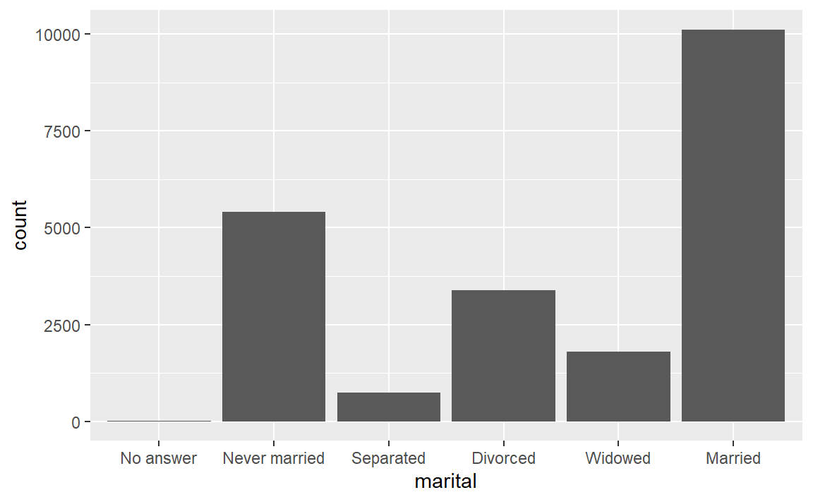

Chapitre 8 Les techniques d’échantillonnage
Lorsqu’on souhaite effectuer un sondage plutôt qu’un recensement, il existe diverses façons pour déterminer quelles seront les n unités statistiques qui feront partie de l’échantillon. Celles-ci sont appelées techniques d’échantillonnage.
8.1 Techniques d’échantillonnage aléatoires
Ces techniques permettent de choisir \(n\) unités statistiques au hasard parmi la population.
En choisissant une de ces techniques, il est possible de tirer des conclusions sur une population à partir des résultats d’un sondage puisque la marge d’erreur peut être calculée.
Ces techniques nécessitent par contre une base de sondage, c’est-à-dire une liste de toutes les unités statistiques.
Il existe 4 techniques d’échantillonnage aléatoires.
- Simple: Les individus sont choisis aléatoirement parmi toutes les unités statistiques.
- Stratifié: La population est divisée en sous-ensembles ayant des caractéristiques communes (strates), puis des unités statistiques sont choisies parmi chacune des strates de façon aléatoire en respectant les proportions de la population.
- Par grappes: La population est divisée en sous-ensembles préalablement existants (grappes). Des grappes sont sélectionnées aléatoirement et toutes les unités statistiques de ces grappes sont choisies.
- Systématique: Les unités statistiques sont choisies à intervalles réguliers. Le pas de sondage, l’intervalle auquel sont choisies les unités statistiques, est \(p=\frac{N}{n}\). La première unité statistique est choisie aléatoirement parmi les p premières unités statistiques.
8.2 Techniques d’échantillonnage non-aléatoires
Ces techniques d’échantillonnage ne relèvent pas du hasard, mais elles sont souvent utilisées puisqu’elles ne nécessitent pas de base de sondage et sont par le fait même généralement plus faciles à mettre en application.
- Accidentel/À l’aveuglette: Les unités statistiques sont choisies parce qu’elles sont présentes lorsque le sondage est effectué.
- Volontaire: Les unités statistiques décident elles-mêmes de participer au sondage.
- Par quotas: La population est divisée en sous-ensembles ayant des caractéristiques communes, puis des unités statistiques sont choisies parmi chacun des sous-ensembles de façon accidentelle en respectant les proportions de la population.
- Au jugé: Le chercheur choisit des unités statistiques précises parce qu’il croit qu’elles sont représentatives de la population.
8.3 Base de données pour les M&M’s
Voici les librairies utilisées.
8.3.1 Mise en place
Pour débuter, il faut remplir la feuille Google Sheets qui contiendra les données. Elle se trouve à l’adresse suivante MetM.
8.3.2 Chargement de la feuille Google
Pour charger la feuille Google, nous utiliserons l’extension googlesheets.
goo <- gs_url("https://docs.google.com/spreadsheets/d/16-kbE75LlCnj2GL9h6Ku9r6GnXbUfRGGxkq_vjiSoyc/edit?usp=sharing")
MetM <- gs_read(goo)Nous pouvons visualiser les données:
MetM
## # A tibble: 12 x 7
## Nom Bleu Orange Vert Jaune Brun Rouge
## <chr> <int> <int> <int> <int> <int> <int>
## 1 Marc-André 6 5 7 8 5 8
## 2 Mélanie 5 5 8 8 6 5
## 3 Anna 6 6 6 5 4 4
## 4 Laurent 5 5 7 5 6 5
## 5 Carolyne 7 4 4 7 6 4
## 6 Pascal 8 7 6 5 5 5
## # ... with 6 more rowsPour être en mesure de travailler avec ses données, nous allons les transformer en tidy data avec la fonction elongate chargée dans cette feuille.
## # A tibble: 413 x 2
## Nom Couleur
## <chr> <fct>
## 1 Mélanie Jaune
## 2 Justin Orange
## 3 Justin Brun
## 4 Pascal Bleu
## 5 Laurent Vert
## 6 Marc-André Orange
## # ... with 407 more rows8.3.3 Les M&M’s
Voici les proportions des couleurs dans les paquets de M&M’s en date de 2008.
| Bleu | Orange | Vert | Jaune | Brun | Rouge |
|---|---|---|---|---|---|
| 24% | 20% | 16% | 14% | 13% | 13% |
Débutons par résumer toute l’information obtenue.
Voici la distribution des M&M’s par couleur.
| n | % | |
|---|---|---|
| Bleu | 72 | 17.4 |
| Brun | 65 | 15.7 |
| Jaune | 73 | 17.7 |
| Orange | 67 | 16.2 |
| Rouge | 60 | 14.5 |
| Vert | 76 | 18.4 |
| Total | 413 | 100.0 |
ggplot(MetMtidy, aes(x = Couleur, fill = Couleur))+
geom_bar(aes(y = (..count..)/sum(..count..)))+
scale_fill_manual(guide=FALSE,
values = c("Bleu"="blue",
"Brun"="brown",
"Jaune"="yellow",
"Orange"="orange",
"Rouge"="red",
"Vert"="green"))+
labs(y = "Pourcentage")
Voici la distribution du nombre de M&M’s par paquet.
| n | % | |
|---|---|---|
| Agnès | 30 | 7.3 |
| Alexandre | 36 | 8.7 |
| André | 37 | 9.0 |
| Anna | 31 | 7.5 |
| Carolyne | 32 | 7.7 |
| Gabriel | 34 | 8.2 |
| Justin | 32 | 7.7 |
| Laurent | 33 | 8.0 |
| Marc-André | 39 | 9.4 |
| Marie-Josée | 36 | 8.7 |
| Mélanie | 37 | 9.0 |
| Pascal | 36 | 8.7 |
| Total | 413 | 100.0 |

Nous pouvons calculer le nombre moyen de M&M’s par paquet.
Voici la distribution du nombre de M&M’s de chaque couleur séparée par paquet.
8.3.4 Simple
8.3.5 Stratifié
8.3.6 Par grappes
Pour utiliser des grappes, nous pouvons choisir certains paquets et observer tous les M&M’s dans ces paquets.
Création de la grappe.
Voici la distribution de M&M’s par couleur.
| n | % | |
|---|---|---|
| Bleu | 18 | 18.4 |
| Brun | 14 | 14.3 |
| Jaune | 15 | 15.3 |
| Orange | 18 | 18.4 |
| Rouge | 13 | 13.3 |
| Vert | 20 | 20.4 |
| Total | 98 | 100.0 |
ggplot(grappe, aes(x = Couleur, fill = Couleur))+
geom_bar(aes(y = (..count..)/sum(..count..)))+
scale_fill_manual(guide=FALSE,
values = c("Bleu"="blue",
"Brun"="brown",
"Jaune"="yellow",
"Orange"="orange",
"Rouge"="red",
"Vert"="green"))+
labs(y = "Pourcentage")
Voici la distribution du nombre de M&M’s par paquet.
| n | % | |
|---|---|---|
| Anna | 31 | 31.6 |
| Gabriel | 34 | 34.7 |
| Laurent | 33 | 33.7 |
| Total | 98 | 100.0 |

8.3.7 Systématique
Pour cette méthode, nous choisissons une unité statistique au hasard, une taille d’échantillon et un pas de sondage.
n <- 15 # La taille de l'échantillon
N <- nrow(MetMtidy) # La taille de la population
p <- floor(N/n) # Le pas de sondage
init <- sample(1:p, 1) # Unité statistique initiale
systematique <- MetMtidy[seq(from = init, to = N, by = p),]Voici la distribution de M&M’s par couleur.
| n | % | |
|---|---|---|
| Bleu | 3 | 20.0 |
| Brun | 2 | 13.3 |
| Jaune | 2 | 13.3 |
| Orange | 3 | 20.0 |
| Rouge | 3 | 20.0 |
| Vert | 2 | 13.3 |
| Total | 15 | 100.0 |
ggplot(systematique, aes(x = Couleur, fill = Couleur))+
geom_bar(aes(y = (..count..)/sum(..count..)))+
scale_fill_manual(guide=FALSE,
values = c("Bleu"="blue",
"Brun"="brown",
"Jaune"="yellow",
"Orange"="orange",
"Rouge"="red",
"Vert"="green"))+
labs(y = "Pourcentage")
Voici la distribution du nombre de M&M’s par paquet.
| n | % | |
|---|---|---|
| Agnès | 2 | 13.3 |
| Alexandre | 2 | 13.3 |
| André | 2 | 13.3 |
| Carolyne | 4 | 26.7 |
| Gabriel | 1 | 6.7 |
| Justin | 1 | 6.7 |
| Marie-Josée | 1 | 6.7 |
| Mélanie | 1 | 6.7 |
| Pascal | 1 | 6.7 |
| Total | 15 | 100.0 |

TODO
- J’aimerais introduire les méthodes d’échantillonnage en utilisant les M&M’s
- Chaque étudiant reçoit une boîte
- Les étudiants comptent le nombre de bonbons de chaque couleur
- Je rentre l’information dans une tibble avec le nom de l’étudiant (ça permet de faire une grappe)
- Les couleurs permettent de faire des strates
Comment construire facilement la tibble? Créer une fonction du genre
m-m(nom, qté rouge, qté bleu, ...)library(tidyverse)
library(questionr)
set.seed(12345)
n <- 24 #On rentre 24 données par personnes
prenoms <- c("Marc-André", "Mélanie", "Anna", "Laurent")
couleurs <- c("Bleu", "Brun", "Orange", "Vert", "Jaune", "Rouge") #Les couleurs possibles
metm <- tibble(nom = character(), couleur = character())
for (i in prenoms){
temp <- tibble(
nom = rep(i, n),
couleur = sample(couleurs, n, replace = TRUE)
)
metm <- rbind(metm, temp)
}
freq(metm$couleur, total = TRUE, valid = FALSE)
## n %
## Bleu 18 18.8
## Brun 13 13.5
## Jaune 20 20.8
## Orange 15 15.6
## Rouge 16 16.7
## Vert 14 14.6
## Total 96 100.0